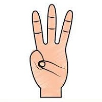

| Finger(s) |
Hand Gesture |
Function |
| Index Finger (1) |
|
The index finger alone is used to navigate the GUI cursor of Kamira, in the same way that a mouse/touchpad of a computer works. |
| Index + Middle Finger (2) |
|
This gesture is for selecting the GUI icon once the cursor hovers above it. Note: keep the index and middle finger as close to each other as possible. |
| Three Fingers Up |
 |
This gesture is for scrolling up the browser/app page. |
| Four Fingers Up |
|
This gesture is for scrolling down the browser/app page. |
| High Five / Palm raise |
|
This gesture is for pausing and playing any multimedia tool on the browser/app page. |
Note: These functions are accessible only on Karima's home page. Switch on the sound detection by clicking on "Kamira" in the header tab.